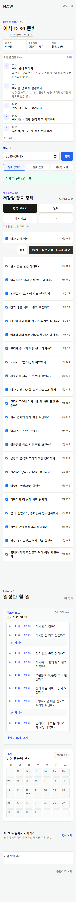
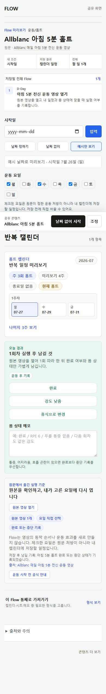
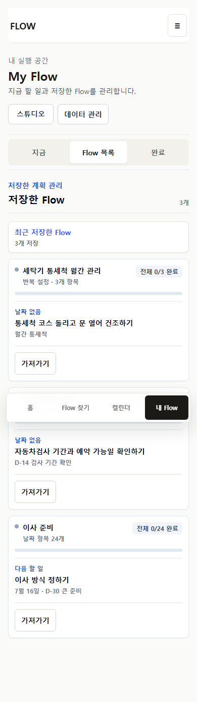
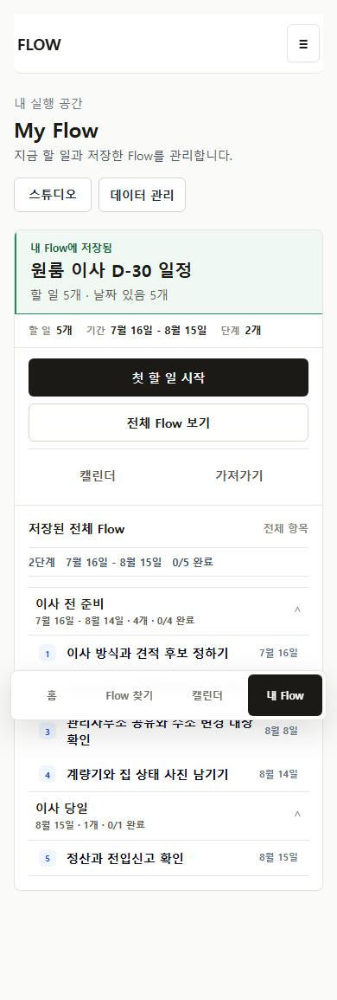
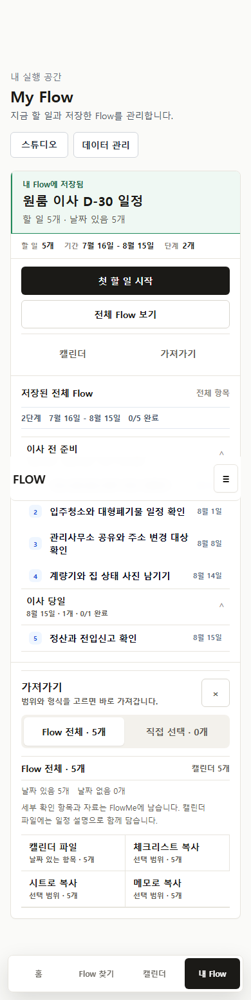
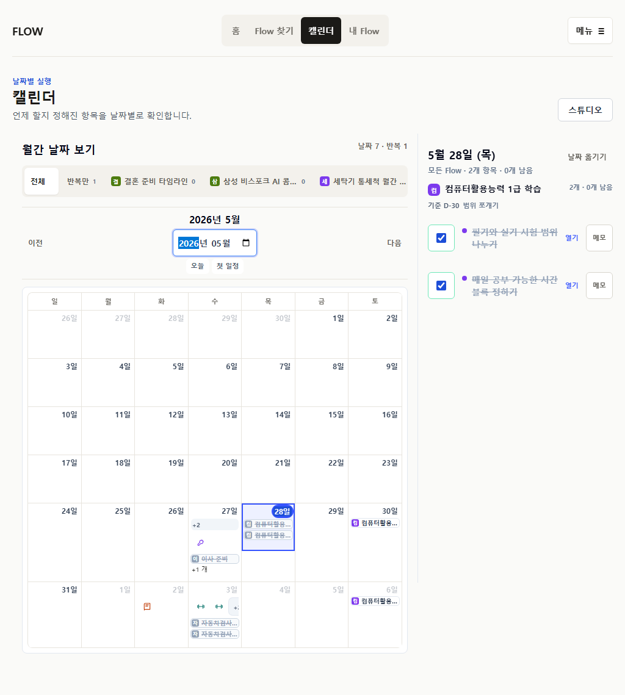
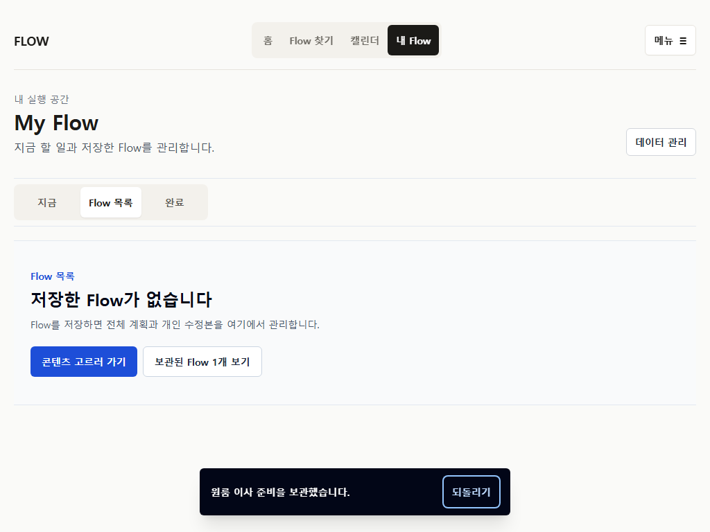

현재 gate
571/571unit
339/339full E2E
0overflow / browser error
0observed-user session
정리한 계약
저장 전전체 Flow를 먼저 읽고 조정에서는 항목, 날짜, 제목·메모, 순서 중 한 작업만 연다.
제거Flow는 보관, source Item은 개인 제외, user Item은 tombstone으로 처리하고 모두 복구 경로를 갖는다.
반복4주 화면 미리보기와 series 종료 조건을 분리하고 occurrence 하나에 완료 control 하나만 둔다.
My Flow작은 보관함은 바로 탐색하고 큰 보관함은 검색한 뒤 결과를 전체 Flow 작업공간으로 연다.
가져가기전체 목록을 반복하지 않고 scope, count, destination, 손실 안내를 compact preflight로 보여준다.
Mobile





Wide



아직 증명하지 않은 것
검색 임계값 5, 기본 조정 mode, 보관 문구, resource 발견성은 실제 사용자에게 확인하지 않았다. cross-device persistence, 실 Calendar 중복 import, 영구 삭제 정책도 P27 범위 밖이다.